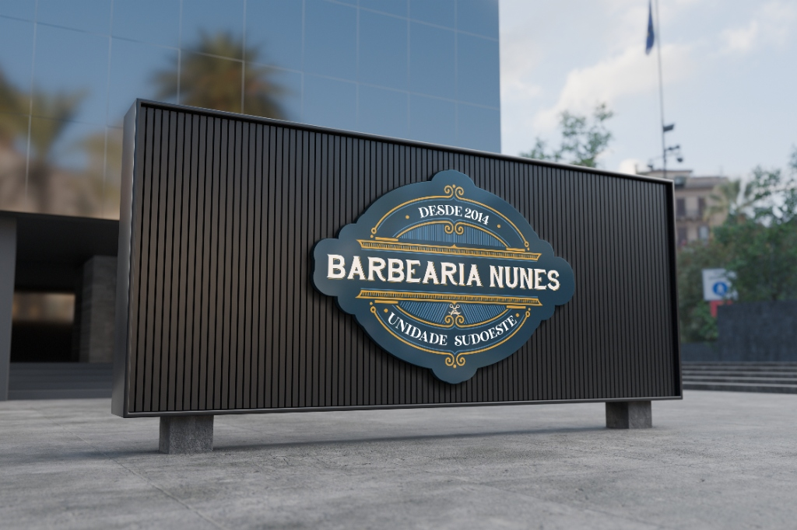
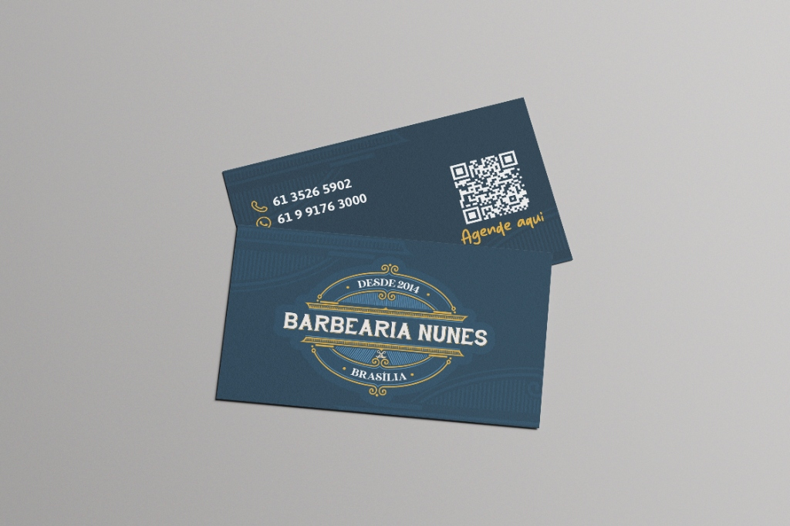

Tradição que impõe
respeito no detalhe.
Ajuste e desdobramento visual para a Barbearia Nunes, tradicional casa fundada em 2014 em Brasília. O projeto equilibra o caráter clássico do brasão com aplicações práticas para o dia a dia da unidade Sudoeste: ajuste de logotipo, cartão de visitas com agendamento rápido, uniforme da equipe e flyer promocional.

Clássico na essência.
Preciso na aplicação.
Com trajetória consolidada desde 2014 em Brasília, a Barbearia Nunes precisava refinar a estrutura do seu brasão para garantir legibilidade, alinhamento óptico e versatilidade tanto na assinatura institucional quanto na versão dedicada à Unidade Sudoeste.
O ajuste preservou os ornamentos clássicos, a tesoura central e as hachuras internas que remetem à barbearia tradicional, organizando pesos tipográficos, respiros e contrastes entre o azul petróleo profundo, o dourado mostarda e o tipográfico claro em relevo.

Frente com brasão sobre gravura clássica e verso focado em contato direto e QR Code.

Contraste entre o fundo azul profundo ilustrado e a assinatura "Agende aqui".
Um cartão pensado
para o próximo corte.
Na frente do cartão de visitas, o brasão "Desde 2014 · Brasília" ganha destaque sobre uma textura sutil de ilustrações de época em tom sobre tom. A composição reforça o cuidado artesanal do atendimento logo no primeiro contato.
No verso, a hierarquia prioriza a praticidade: telefone fixo, WhatsApp, perfil do Instagram e um QR Code acompanhado da chamada manuscrita "Agende aqui", reduzindo o caminho entre o impresso de bolso e a marcação do horário.
Ajuste fiel
à tradição.
Ornamentos, moldura e tipografia serifada refinados para manter nitidez em fachada, bordado e impressão.
Azul petróleo
& ouro mostarda.
Uma paleta sóbria e masculina que diferencia a marca e cria unidade imediata entre vestuário e papelaria.
Ação direta
em cada peça.
Do QR Code de agendamento ao voucher de desconto no panfleto, cada material convida o cliente a agir.
Do atendimento no salão
à conquista de clientes.
Para padronizar a apresentação da equipe, a camisa polo combina o corpo em azul petróleo com gola, peitilho e punhos em mostarda. O brasão é aplicado no peito esquerdo, enquanto as costas trazem a inscrição tipográfica "Barbearia Nunes" em destaque horizontal para rápida leitura no ambiente do salão.
Já o flyer promocional da Unidade Sudoeste aposta em alto impacto visual: fotografia em preto e branco combinada a uma composição tipográfica expressiva ("Tenha um corte de respeito"), máquina de corte em primeiro plano com efeito de profundidade e selo de voucher especial de 30% OFF.